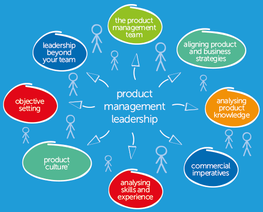
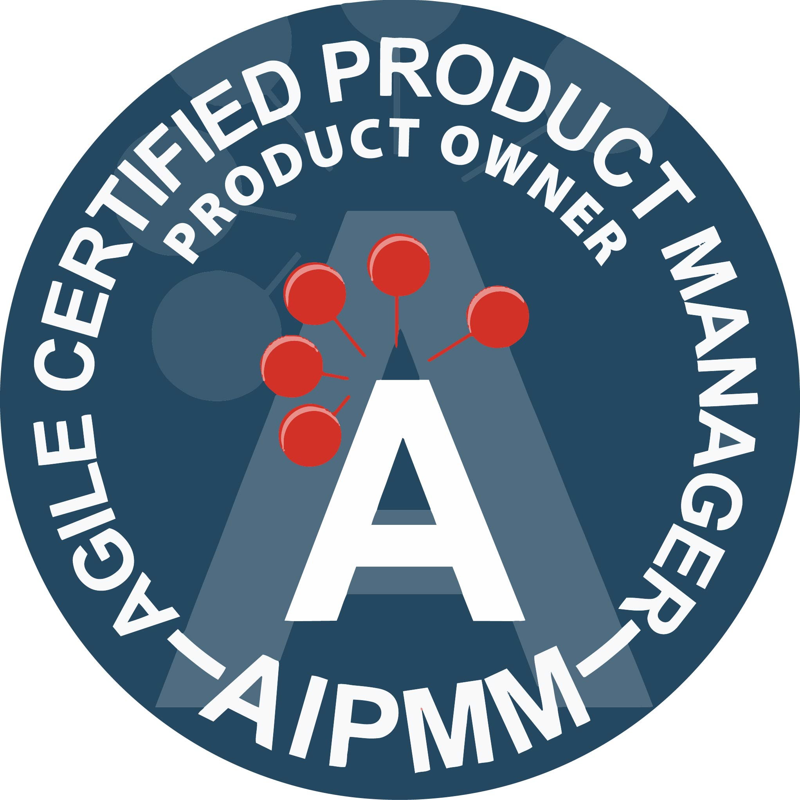

Who do PMs Work With?
- Business analysts to find out what the market is missing
- Sales teams to know what is being promised to potential clients
- Customers & partners to identify what market needs are
- Engineers to physically build the product (these are the VIPs of the PM world. Without engineers, there’s no product.)
- Design teams to give the product some gusto!
- Marketing, aka, The Hype Man!, to get the product out to market.

Tools Used to Collaborate as a PM

PM Certifications & Programs
PMs often get bundled into other forms of management like Project Managers; they are similar but not the same. For certification purposes, they are! The PMP certification is the most widely recognized certification available in the industry. Another up and comer is the Certified Scrum Master, or CSM for short. Agile project management is the key to effectively and expeditiously completing tasks and larger projects! Below are the certifications and programs that can help you become a better PM.
Tips & Tricks
Need help encouraging your engineers? Find out what they like: Whiskey!
About Me

Benjamin Lockspeiser is an aspiring product manager working to transition to the tech side of PM from public sector government. Having experience in emergency management and disaster response, Ben is no stranger to tight timelines and high stress environments!
Have Questions? Contact Me!